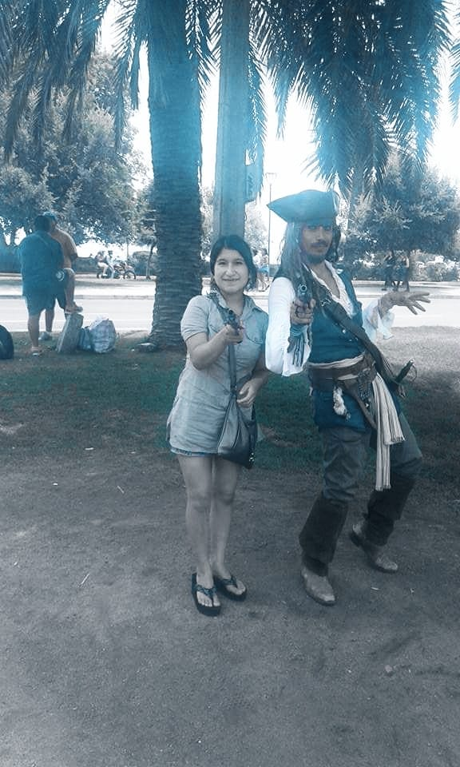

NIÑERA
Solo dos veces trabajé de niñera, pero en realidad he pasado gran parte de mi vida con niños, me gusta compartir momentos con ellos, disfruto cada ocurrencia que tienen, además que siempre me hacen sonreír


Solo dos veces trabajé de niñera, pero en realidad he pasado gran parte de mi vida con niños, me gusta compartir momentos con ellos, disfruto cada ocurrencia que tienen, además que siempre me hacen sonreír
Trabajé de cajera por un largo tiempo
en el bazar de mi hermana
Explicaba temas que se desarrollaban
en tercero de primaria de la escuela,
a una niña de 8 años.
"Pacasmayo"

"Cumbe Mayo"

"Río Claro-en un pueblo del sur de Chile"

"Parque Rio Claro"

"La Moneda-Santiago de Chile"

"Viña de Mar"

"Jacks Parrow-Viña del Mar"

"Namora- un pequeño paseo

"Lago Calafquén-Región La Araucanía"

Arroz con mariscos

Tallarines con salsa pesto

Fetuccini con salsa boloñesa